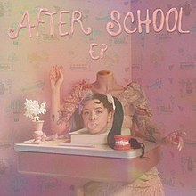
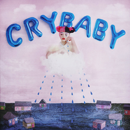
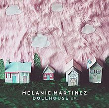

This is Melanie Martinez performing at the Carioca Club in 2015, Photo by Yann Cerri, via Wikimedia Commons
Melanie Martinez is an American singer/songwriter and alternative pop icon. After an amazing run on hit TV show The Voice, Martinez developed her unique lolita-style persona. She's easily recognizable from her bright pink fashion and half-dyed hair. Martinez's official debut single, Dollhouse, showcased her talent for combining light, childish topics with dark, eerie undertones. Many of her songs reflect personal experiences throughout her life, particularly moments in her school-age years and the bullying she faced. Her first album has elementary-school nostalgia, and her latest full album, K-12, spoke more on her high school years. Additionally, Martinez's K-12 album has a full-length film to showcase a story behind the songs in the album, which can be found in its entirety on YouTube.
  